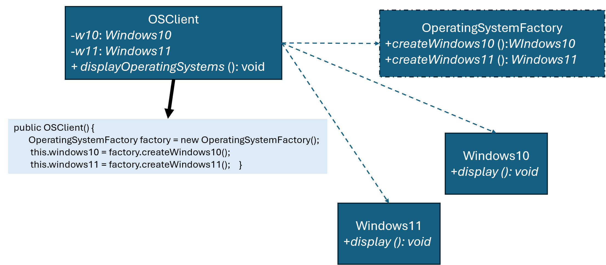

優點
缺點
總評
此回合展現極高主體性與深入自我反思，但全程為學生自述，還未有實質人機協同或驗證歷程。雖然認知、規劃、評估等層面極強，但互動合作與驗證尚可加強。
interface OperatingSystem {
void display();
}
class Windows10 implements OperatingSystem {
@Override
public void display() {
System.out.println("Displaying Windows 10");
}
}
class Windows11 implements OperatingSystem {
@Override
public void display() {
System.out.println("Displaying Windows 11");
}
}
interface OperatingSystemFactory {
OperatingSystem createWindows();
}
class Windows10Factory implements OperatingSystemFactory {
@Override
public OperatingSystem createWindows() {
return new Windows10();
}
}
class Windows11Factory implements OperatingSystemFactory {
@Override
public OperatingSystem createWindows() {
return new Windows11();
}
}
class OSClient {
private OperatingSystem operatingSystem;
public OSClient(OperatingSystemFactory operatingSystemFactory) {
this.operatingSystem = operatingSystemFactory.createWindows();
}
public void displayOperatingSystem() {
operatingSystem.display();
}
}
public class Main {
public static void main(String[] args) {
OSClient os = new OSClient(new Windows10Factory());
os.displayOperatingSystem();
os = new OSClient(new Windows11Factory());
os.displayOperatingSystem();
}
}
!@#$報告
新設計有何優點?
這個新設計的重點在於把「建立作業系統物件」這件事獨立出來，交給 OperatingSystemFactory 處理，而不是讓 OSClient 自己去決定要 new Windows10 還是 Windows11。
這樣做最直接的好處是，OSClient 變得很單純，它只負責呼叫 display()，完全不需要知道底層是哪個版本。也因為只依賴 OperatingSystem 這個介面，所以之後要換版本或新增版本，不會影響到這段程式。
在擴充上也比較乾淨。假設要加入 Windows12，只需要新增對應的類別和 Factory，原本的程式幾乎不用改。也就是說，功能可以一直加，但舊程式可以維持不動，穩定性會比較好。
另外，物件建立的邏輯都集中在 Factory 裡面。現在看起來只是簡單 new，但如果未來建立過程變複雜（例如初始化、參數設定），只要改 Factory 就好，不用到處找程式碼修改。
整體來看，這個設計讓「怎麼建立物件」跟「怎麼使用物件」分開，程式在修改、擴充時比較不容易互相影響，也比較好維護。!@#$
請檢視程式碼介面是否違反 Abstract Factory 模式，並撰寫報告，討論新設計有何優點?

public class OSClient {
private OperatingSystem os;
public OSClient(OperatingSystemFactory factory) {
this.os = factory.createOperatingSystem();
}
public void displayOperatingSystem() {
os.display();
}
}
並修改程式，使得執行輸出：